<!DOCTYPE lake>
<h1 data-lake-id="n5vHb" id="n5vHb"><span data-lake-id="u08b33f66" id="u08b33f66">串行通信和并行通信</span></h1><p data-lake-id="u83bd6722" id="u83bd6722"><strong><span class="lake-fontsize-12" data-lake-id="u144d2d3f" id="u144d2d3f">串行通信</span></strong></p><p data-lake-id="u75a0164b" id="u75a0164b">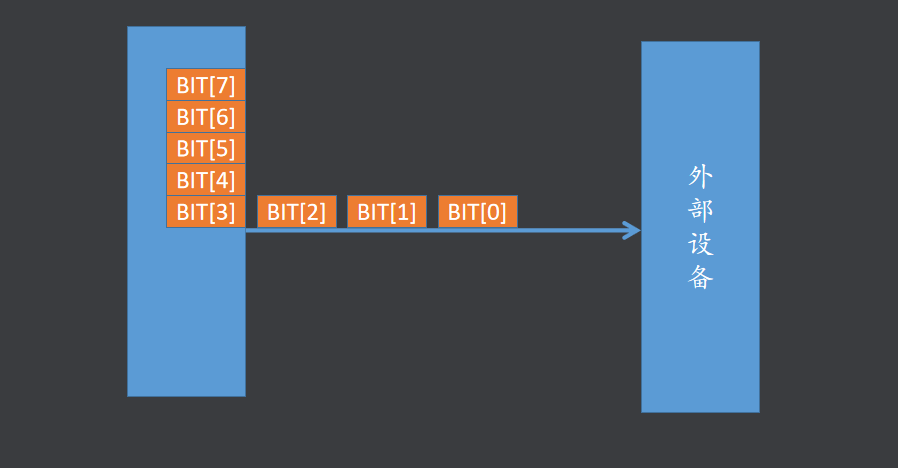</p><p data-lake-id="u5275e443" id="u5275e443"><br/></p><p data-lake-id="uceebbace" id="uceebbace"><strong><span data-lake-id="u256fae57" id="u256fae57">并行通信</span></strong></p><p data-lake-id="u993930a9" id="u993930a9">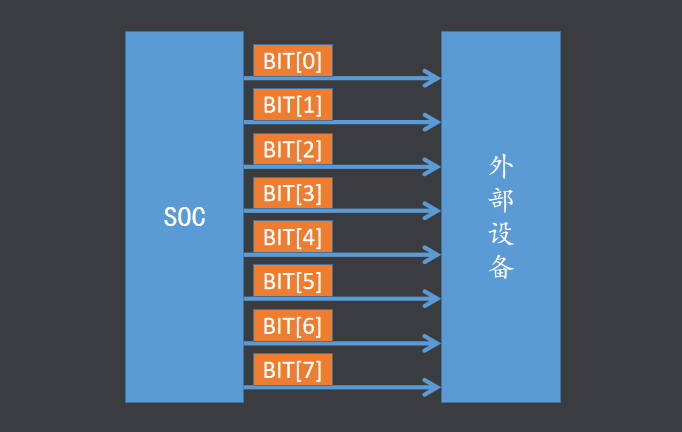</p><h1 data-lake-id="WHMd5" id="WHMd5"><span data-lake-id="ud41294a0" id="ud41294a0">常用串行通信接口</span></h1><p data-lake-id="u9e33b3c6" id="u9e33b3c6">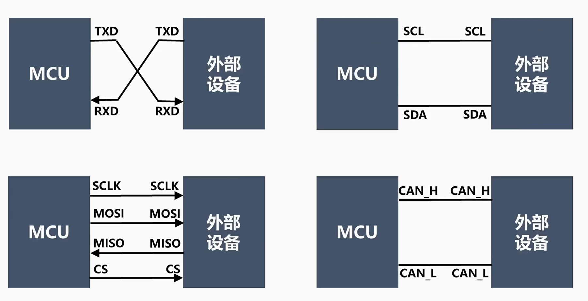</p><h1 data-lake-id="i5k0G" id="i5k0G"><span data-lake-id="u896b5914" id="u896b5914">同步通信和异步通信</span></h1><p data-lake-id="ua60ed82c" id="ua60ed82c"><strong><span data-lake-id="uae519232" id="uae519232">同步通信需要时钟信号,异步通信不需要时钟信号</span></strong></p><p data-lake-id="u941093aa" id="u941093aa">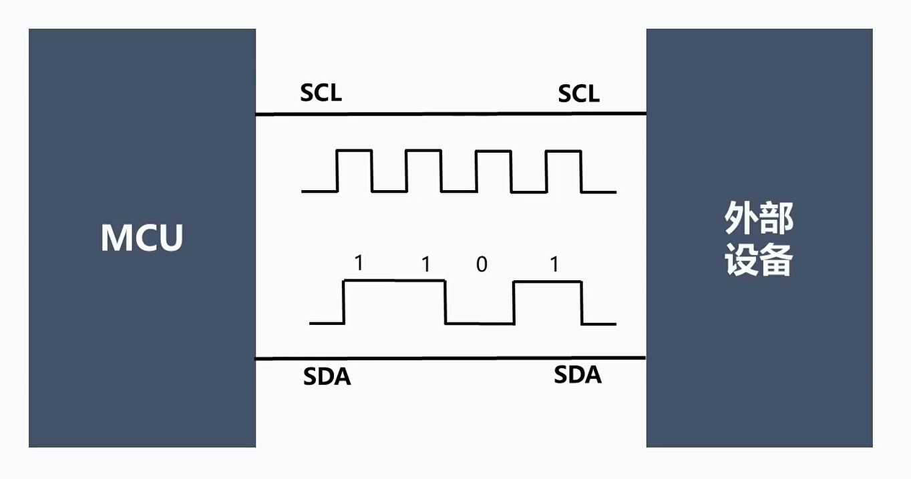</p><h1 data-lake-id="OEd1L" id="OEd1L"><span data-lake-id="u555a8653" id="u555a8653">单工和双工</span></h1><p data-lake-id="u345c3aed" id="u345c3aed"><strong><span data-lake-id="u9d162060" id="u9d162060">单工通信</span></strong></p><p data-lake-id="ue855c392" id="ue855c392"></p><p data-lake-id="uf128cef7" id="uf128cef7"><strong><span data-lake-id="u338b650a" id="u338b650a">双工通信</span></strong></p><p data-lake-id="u64b7b08e" id="u64b7b08e">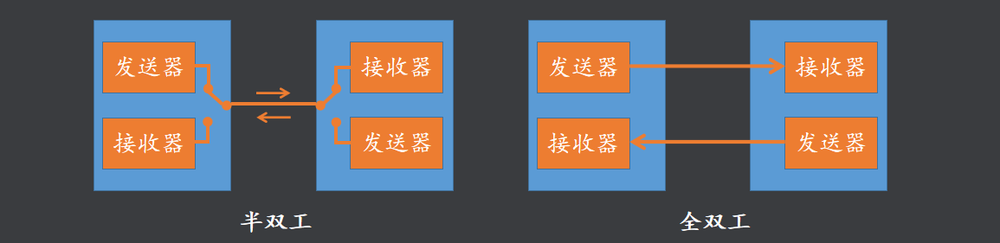</p><h1 data-lake-id="UP3zE" id="UP3zE"><span data-lake-id="ubc1f6733" id="ubc1f6733">波特率和比特率</span></h1><h2 data-lake-id="utI3p" id="utI3p"><span data-lake-id="ud2a9e59d" id="ud2a9e59d" style="color: rgb(51, 51, 51)">比特率</span></h2><p data-lake-id="uca938c9f" id="uca938c9f"><span class="lake-fontsize-12" data-lake-id="u676aa47c" id="u676aa47c" style="color: rgb(51, 51, 51)">衡量通讯性能的一个非常重要的参数就是通讯速率，通常以比特率(Bitrate)来表示，即每秒钟传输的二进制位数，单位为比特每秒(bit/s)。</span></p><h2 data-lake-id="vSoa3" id="vSoa3"><span data-lake-id="u82bf06ae" id="u82bf06ae" style="color: rgb(51, 51, 51)">波特率</span></h2><p data-lake-id="u1b936f77" id="u1b936f77"><span class="lake-fontsize-12" data-lake-id="u164bd329" id="u164bd329" style="color: rgb(51, 51, 51)">容易与比特率混淆的概念是“波特率”(Baudrate)，它表示每秒钟传输了多少个码元。而码元是通讯信号调制的概念，通讯中常用时间间隔相同的符号来表示一个二进制数字，这样的信号称为码元。</span></p><p data-lake-id="u6c14832d" id="u6c14832d"><span class="lake-fontsize-12" data-lake-id="uab75ede8" id="uab75ede8" style="color: rgb(51, 51, 51)">如常见的通讯传输中，用 0V 表示数字 0，5V 表示数字 1，那么一个码元可以表示两种状态 0 和 1，所以一个码元等于一个二进制比特位，此时波特率的大小与比特率一致；如果在通讯传输中，有 0V、2V、4V 以及 6V 分别表示二进制数 00、01、10、11，那么每个码元可以表示四种状态，即两个二进制比特位，所以码元数是二进制比特位数的一半，这个时候的波特率为比特率的一半。</span></p><p data-lake-id="u638f391d" id="u638f391d"><span class="lake-fontsize-12" data-lake-id="ucc1ccf4b" id="ucc1ccf4b" style="color: rgb(51, 51, 51)">因为很多常见的通讯中一个码元都是表示两种状态，人们常常直接以波特率来表示比特率。</span></p><p data-lake-id="ucbeb04fd" id="ucbeb04fd"><span class="lake-fontsize-12" data-lake-id="uc20e2fd0" id="uc20e2fd0" style="color: rgb(51, 51, 51)">常见的波特率为4800、9600、115200 等。</span></p><p data-lake-id="u9a2dba4f" id="u9a2dba4f"><span class="lake-fontsize-12" data-lake-id="u2ae477f4" id="u2ae477f4" style="color: rgb(51, 51, 51)">在数字通信中，每个码元可以代表1个或多个比特。因此，数据传输速率与波特率的关系如下：</span></p><p data-lake-id="u1ab3c00c" id="u1ab3c00c"><code data-lake-id="u1b18b311" id="u1b18b311"><span class="lake-fontsize-12" data-lake-id="u1c54a768" id="u1c54a768" style="color: rgb(51, 51, 51)">数据传输速率 = 波特率 × 每个码元所包含的比特数</span></code><span class="lake-fontsize-12" data-lake-id="u428a50f5" id="u428a50f5" style="color: rgb(51, 51, 51)">。</span></p><ul list="u3271470f"><li data-lake-id="u6833219a" fid="u8d2925b4" id="u6833219a"><span class="lake-fontsize-12" data-lake-id="u763bbfee" id="u763bbfee" style="color: rgb(51, 51, 51)">如果每个波特内传输一个比特，那么波特率和比特率相等。</span></li></ul><blockquote data-lake-id="ubce1b8b2" id="ubce1b8b2"><p data-lake-id="u7b7d092e" id="u7b7d092e" style="text-indent: 2em"><span class="lake-fontsize-12" data-lake-id="u07be9b86" id="u07be9b86" style="color: rgb(51, 51, 51)">例如，如果波特率是1200波特，那么比特率就是1200 bps。</span></p></blockquote><ul list="ub55b5d53"><li data-lake-id="ucfc56ba7" fid="u7f058e48" id="ucfc56ba7"><span class="lake-fontsize-12" data-lake-id="u2877c500" id="u2877c500" style="color: rgb(51, 51, 51)">如果每个波特内传输两个比特，那么波特率和比特率就不相等。</span></li></ul><blockquote data-lake-id="uf79c4570" id="uf79c4570"><p data-lake-id="udd07b665" id="udd07b665" style="text-indent: 2em"><span class="lake-fontsize-12" data-lake-id="u0a29dabf" id="u0a29dabf" style="color: rgb(51, 51, 51)">例如，如果波特率是1200波特，而每个波特内传输两个比特，那么比特率就是2400 bps。</span></p></blockquote><h1 data-lake-id="skoWP" id="skoWP"><span data-lake-id="uc957bf76" id="uc957bf76">串口通信</span></h1><p data-lake-id="uda34d363" id="uda34d363"><span class="lake-fontsize-12" data-lake-id="ud52718c1" id="ud52718c1" style="color: rgb(55, 65, 81); background-color: rgb(247, 247, 248)">串口通信指的是通过串行通信接口进行数据传输的通信方式，通常用于短距离、低速率的数据传输。</span></p><p data-lake-id="ue92bcb7e" id="ue92bcb7e"><span class="lake-fontsize-12" data-lake-id="u88cb7ac2" id="u88cb7ac2" style="color: rgb(55, 65, 81); background-color: rgb(247, 247, 248)">串口通信可以使用不同的串行通信协议和接口，</span><span class="lake-fontsize-12" data-lake-id="u903a2bb2" id="u903a2bb2">常见的串口通信协议有UART、USART、</span><span class="lake-fontsize-12" data-lake-id="u026ee69c" id="u026ee69c" style="color: rgb(55, 65, 81); background-color: rgb(247, 247, 248)">RS-232、RS-485、SPI、I2C等</span></p><h1 data-lake-id="UCWof" id="UCWof"><span data-lake-id="ub2c3dd34" id="ub2c3dd34">UART通信</span></h1><p data-lake-id="ud5397cd7" id="ud5397cd7"><span class="lake-fontsize-12" data-lake-id="u98900428" id="u98900428" style="color: rgb(51, 51, 51)">Universal Asynchronous Receiver Transmitter 即 通用异步收发器，是一种通用的串行、异步通信总线 该总线有两条数据线，可以实现全双工的发送和接收 在嵌入式系统中常用于主机与辅助设备之间的通信</span></p><blockquote data-lake-id="uf4b120e6" id="uf4b120e6"><p data-lake-id="u36c22af4" id="u36c22af4"><span class="lake-fontsize-12" data-lake-id="u6955b9d9" id="u6955b9d9" style="color: rgb(55, 65, 81); background-color: rgb(247, 247, 248)">同步通信和异步通信的最大区别在于传输数据时是否需要时钟信号同步</span></p></blockquote><h2 data-lake-id="wFuBI" id="wFuBI"><span data-lake-id="u5cdd2ab2" id="u5cdd2ab2">UART的数据帧</span></h2><p data-lake-id="u84f4f3b8" id="u84f4f3b8">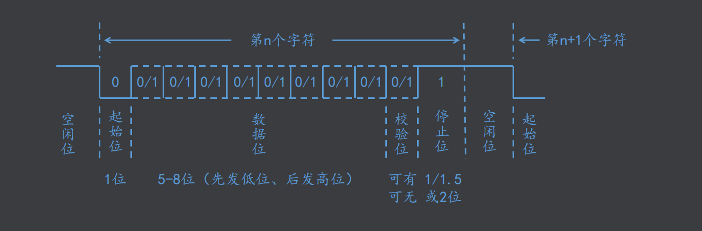</p><p data-lake-id="ud4aceba9" id="ud4aceba9"><span class="lake-fontsize-12" data-lake-id="ua738649c" id="ua738649c" style="color: rgb(51, 51, 51)">举例:发送0x55 二进制:01010101</span></p><p data-lake-id="u0f12b0af" id="u0f12b0af">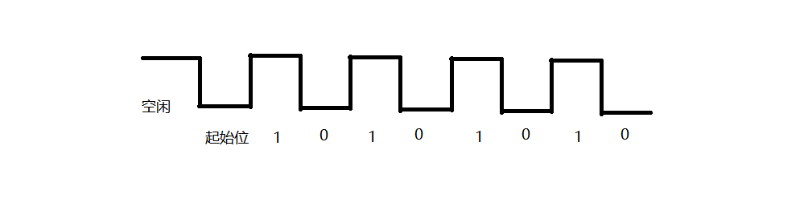</p><h2 data-lake-id="JHdBn" id="JHdBn"><span data-lake-id="u8a1bfa0d" id="u8a1bfa0d">校验位</span></h2><p data-lake-id="u97713ffc" id="u97713ffc"><span data-lake-id="u7e0fc8be" id="u7e0fc8be">串口通信过程中有五种校验方式：</span><strong><span data-lake-id="u12157146" id="u12157146">奇校验(ODD)</span></strong><span data-lake-id="ua3dfd334" id="ua3dfd334">、</span><strong><span data-lake-id="u1875fff9" id="u1875fff9">偶校验(EVEN)</span></strong><span data-lake-id="u23c8511f" id="u23c8511f">，</span><strong><span data-lake-id="ua6348977" id="ua6348977">1校验(MARK)</span></strong><span data-lake-id="u9d658639" id="u9d658639">、 </span><strong><span data-lake-id="ub8bc0662" id="ub8bc0662">0校验(SPACE)</span></strong><span data-lake-id="u11a08777" id="u11a08777">，</span><strong><span data-lake-id="u5a31135c" id="u5a31135c">无校验(NONE)</span></strong></p><p data-lake-id="ua942dc0f" id="ua942dc0f"><strong><span data-lake-id="ud74a263d" id="ud74a263d">奇校验（ODD）</span></strong><span data-lake-id="ub82eef81" id="ub82eef81">：校验位被设置为确保数据位中1的总数为</span><strong><span data-lake-id="ub4fa7580" id="ub4fa7580">奇数</span></strong><span data-lake-id="u076f7b0f" id="u076f7b0f">。例如，数据位中的“1”总数为</span><strong><span data-lake-id="ue8da001d" id="ue8da001d">奇数</span></strong><span data-lake-id="u391768aa" id="u391768aa">，校验位被设置为</span><u><span data-lake-id="uedbefa37" id="uedbefa37">低电平</span></u><span data-lake-id="u9a993eac" id="u9a993eac">（拉低为0），否则设置为高电平。故而，如果接收方统计发现“1”总数为</span><strong><span data-lake-id="u87534106" id="u87534106">偶数</span></strong><span data-lake-id="ucd93290c" id="ucd93290c">，且校验是低电平，则校验失败，否则成功。</span></p><p data-lake-id="u1470e471" id="u1470e471"><strong><span data-lake-id="u6827cd5a" id="u6827cd5a">偶校验（Even）</span></strong><span data-lake-id="u6551b618" id="u6551b618">： 校验位被设置为确保数据位中1的总数为</span><strong><span data-lake-id="uc8aa30ec" id="uc8aa30ec">偶数</span></strong><span data-lake-id="ue807c38e" id="ue807c38e">。例如，数据位中的“1”总数为</span><strong><span data-lake-id="udf5e32b0" id="udf5e32b0">偶数</span></strong><span data-lake-id="ub9605efc" id="ub9605efc">，校验位被设置为</span><u><span data-lake-id="ub240a234" id="ub240a234">低电平</span></u><span data-lake-id="uc19323aa" id="uc19323aa">（拉低为0），否则设置为高电平。故而，如果接收方统计发现“1”总数为</span><strong><span data-lake-id="u31f01860" id="u31f01860">奇数</span></strong><span data-lake-id="u65b66c91" id="u65b66c91">，且校验是低电平，则校验失败，否则成功。</span></p><p data-lake-id="ud89c28ee" id="ud89c28ee"><span data-lake-id="u683392bd" id="u683392bd">1校验（MARK）：1校验要求校验位始终为逻辑1，适用于古老的通讯设备。</span></p><p data-lake-id="u0183f615" id="u0183f615"><span data-lake-id="u201bbda6" id="u201bbda6">0校验（SPACE）：0校验要求校验位始终为逻辑0，也适用于古老的通讯设备。</span></p><p data-lake-id="ucfe414e7" id="ucfe414e7"><span data-lake-id="u0e749cf7" id="u0e749cf7">无校验（NONE）：不使用任何校验位，数据直接传输</span></p><p data-lake-id="u6f21fa7d" id="u6f21fa7d"><span data-lake-id="u33525e87" id="u33525e87">​</span><br/></p><blockquote class="lake-alert lake-alert-color3" data-lake-id="u4466e5b8" id="u4466e5b8"><p data-lake-id="uc80ea4c1" id="uc80ea4c1"><span data-lake-id="u46569e0b" id="u46569e0b">注：部分ARM系列库要把发送的BIT长度</span><code data-lake-id="u18fa1778" id="u18fa1778"><span data-lake-id="uc6ff02e8" id="uc6ff02e8">word length</span></code><span data-lake-id="uac94787b" id="uac94787b">设置为9，才能正确发送校验位。</span></p></blockquote><h2 data-lake-id="e9AOd" id="e9AOd"><span data-lake-id="uc3df10c0" id="uc3df10c0">发送01和0011问题</span></h2><p data-lake-id="u052798b5" id="u052798b5">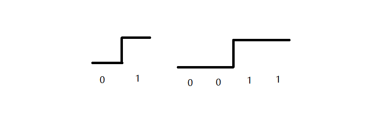</p><p data-lake-id="u52ccb21b" id="u52ccb21b"><span class="lake-fontsize-12" data-lake-id="u9a7491e6" id="u9a7491e6" style="color: rgb(51, 51, 51)">发送01和0011,接收端如何来确定和区分</span></p><p data-lake-id="u8906850b" id="u8906850b"><strong><span class="lake-fontsize-12" data-lake-id="u17aa28bc" id="u17aa28bc" style="color: rgb(51, 51, 51)">波特率</span></strong></p><p data-lake-id="u608df74e" id="u608df74e"><span class="lake-fontsize-12" data-lake-id="ub45960ac" id="ub45960ac" style="color: rgb(51, 51, 51)">波特率决定了接收数据的速度,也就是每个电平持续的时间</span></p><p data-lake-id="udd66621d" id="udd66621d"><strong><span class="lake-fontsize-12" data-lake-id="u825c8d54" id="u825c8d54" style="color: rgb(51, 51, 51)">累计误差消除</span></strong></p><p data-lake-id="u6276f3b3" id="u6276f3b3"><span class="lake-fontsize-12" data-lake-id="ub7270fe5" id="ub7270fe5" style="color: rgb(51, 51, 51)">发送和接收的时候使用的是不同的时钟，所以即便是使用相同的波特率，也有可能因为时钟微小的不同步，造成数据的累计误差，解决方案是，UART只能一次性最多发送8bit的数据，然后重新发送，以消除累计误差</span></p><h2 data-lake-id="ATZEb" id="ATZEb"><span data-lake-id="ua718f101" id="ua718f101" style="color: rgb(51, 51, 51)">UART硬件连接</span></h2><p data-lake-id="u3cca2119" id="u3cca2119">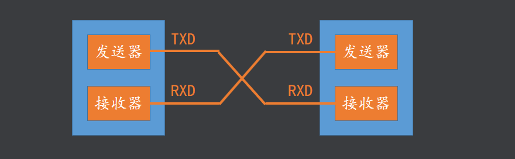</p><p data-lake-id="u16a84521" id="u16a84521">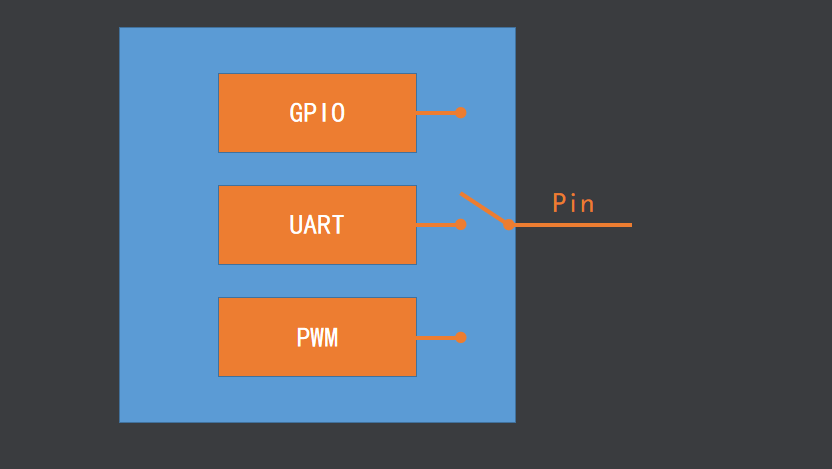</p><blockquote data-lake-id="u8ec13932" id="u8ec13932"><p data-lake-id="u9ccd74b8" id="u9ccd74b8"><span class="lake-fontsize-12" data-lake-id="uda89052c" id="uda89052c" style="color: rgb(119, 119, 119)">设置引脚功能的实质是让引脚在芯片内部连接到某一个对应的控制器上</span></p></blockquote><h1 data-lake-id="IfxgL" id="IfxgL"><span data-lake-id="u710a1411" id="u710a1411">USART</span></h1><p data-lake-id="u46941a6b" id="u46941a6b" style="text-indent: 2em"><span class="lake-fontsize-12" data-lake-id="u5f4e130c" id="u5f4e130c" style="color: rgb(51, 51, 51)">USART(Universal Synchronous Asynchronous Receiver and Transmitter)通用同步异步收发器,是一个串行通信设备，可以灵活地与外部设备进行全双工数据交换。</span></p><p data-lake-id="u364a1d74" id="u364a1d74" style="text-indent: 2em"><span class="lake-fontsize-12" data-lake-id="uf61cdeb2" id="uf61cdeb2" style="color: rgb(51, 51, 51)">USART支持异步通信,也支持同步通信。一般使用异步通信。</span></p><p data-lake-id="ub316e0a9" id="ub316e0a9"><span class="lake-fontsize-12" data-lake-id="u9a131a5e" id="u9a131a5e" style="color: rgb(52, 73, 94)">USART在进行通信的时候会按照数据包的形式进行发送，帧格式如图</span></p><p data-lake-id="uea0cf318" id="uea0cf318">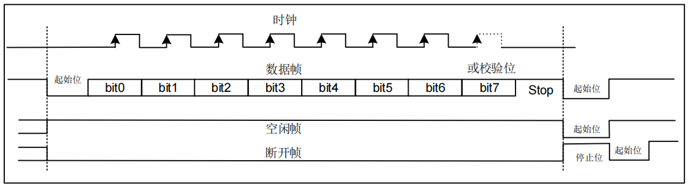</p><p data-lake-id="ua33c2ee5" id="ua33c2ee5" style="text-indent: 2em"><span class="lake-fontsize-12" data-lake-id="u08b18556" id="u08b18556">串口通信是一位一位地传输，每传输一个字符总是以起始位开始，以停止位结束，字符之间没有固定的时间间隔要求。每一个字符的前面都有一位起始位（低电平），后面由7位或8位数据位组成，接着是一位校验位，最后是停止位。停止位后面是不定长的空闲位，停止位和空闲位都规定为高电平。</span></p><h1 data-lake-id="nZL7j" id="nZL7j"><span data-lake-id="ucbd066dc" id="ucbd066dc">串口原理图</span></h1><p data-lake-id="u1bb093fc" id="u1bb093fc" style="text-indent: 2em"><span class="lake-fontsize-12" data-lake-id="u27f9ba64" id="u27f9ba64">在开发板上默认使用的串口是串口1，有两根数据线，也就是USART0_TX和USART0_RX。串口引脚和下载引脚连接在同一个端子上，插上DAPLink就可以进行下载和串口调试。关于串口原理图如图2-1-1所示。</span></p><p data-lake-id="u9ef63c39" id="u9ef63c39">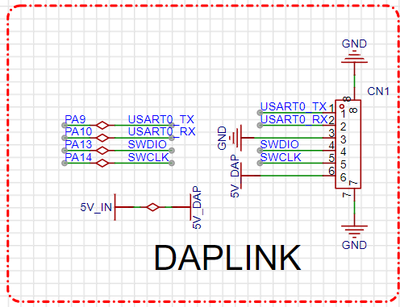</p><h1 data-lake-id="F9Feu" id="F9Feu"><span data-lake-id="u95591c74" id="u95591c74">串口驱动流程</span></h1><p data-lake-id="u2ce45a77" id="u2ce45a77"><span class="lake-fontsize-12" data-lake-id="u2dc51b8e" id="u2dc51b8e" style="color: rgb(52, 73, 94)">把DAPLink连接到开发板的端子上，打开串口调试助手（sscom5.13.1），然后会检测到一个串口。</span></p><p data-lake-id="u248a5442" id="u248a5442"><span class="lake-fontsize-12" data-lake-id="udf2969ca" id="udf2969ca" style="color: rgb(52, 73, 94)">编写代码，先要配置串口使能，配置波特率、停止位、校验位等参数。然后调用串口发送函数即可发送数据。如使用重定向还需要编写重定向函数，使用printf即可打印输出。</span></p>